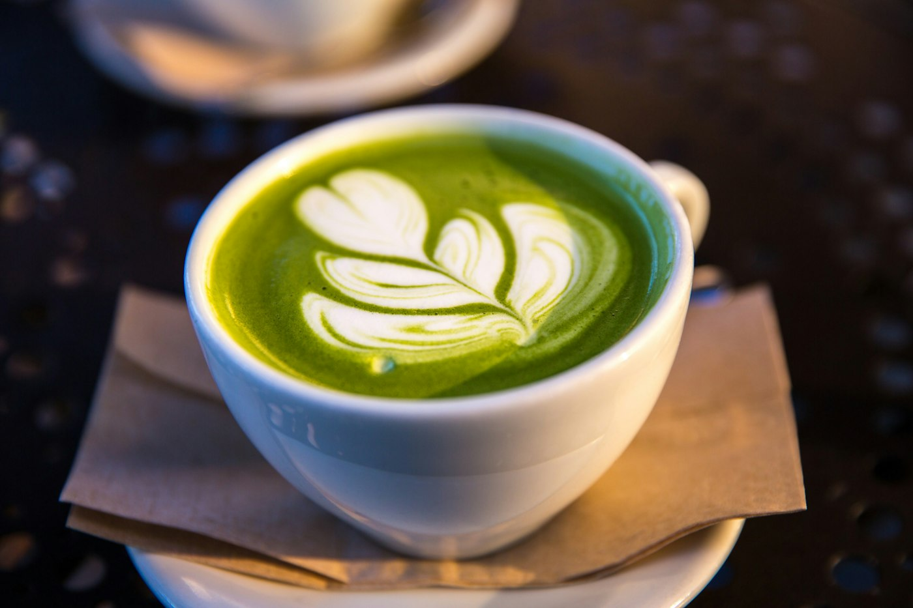

Craft over speed
We slow down where it counts. Syrups are cooked each morning, cold brew steeps for eighteen hours, and no cup leaves the bar until the foam is right.
Brew is the craft — the roast, the grind, the pull, the steep. Bloom is what happens when a place is right: a regular orders the same thing every morning, a stranger stays for one more hour, a cup you did not expect turns into your new favourite.
The name is deliberately two simple words rather than a clever
compound. It reads quickly on a small screen, it survives being
printed on a cup, and it describes the two halves of the idea:
precision on one side, warmth on the other.
Four principles that decide how we make things — and how we talk
about them.
We slow down where it counts. Syrups are cooked each morning, cold
brew steeps for eighteen hours, and no cup leaves the bar until
the foam is right.
Every coffee we serve names the farm it came from. If we cannot
tell you where a bean grew, we do not put it on the menu.
A caffeine-free matcha, a strong espresso, a slow afternoon — the
counter is open to whatever mood you arrive in.
We work with Indonesian growers first. Our brown sugar, pandan and
palm sugar come from local suppliers who we know by name.
What we stand for
Brand values
Craft over speed
Origin in the cup
Room for everyone
Grown here

Most coffee is made for speed — the drive-through, the queue, the meeting. Our approach is the opposite. We brew for the moment the cup arrives: not too hot to hold, not too cool to lose its character.
It shows in small decisions. Milk is steamed to 60°C so it tastes sweet rather than scalded. Syrups are cooked from raw sugar, not mixed from concentrate. Cold brew steeps for eighteen hours instead of four. None of it is fast, and that is the point.
The rebrand concept was developed from an analysis of the original brand’s visual identity and customer experience. These are the design decisions behind Brew & Bloom.
Diagnosis
The brand being analysed relies on heavy red, dense promotional graphics and a fast-service language. The visual system is consistent but loud, which works for reach and works less well for a calm, premium experience.
Positioning
Brew & Bloom moves the promise from speed to craft. The language changes from “praktis dan cepat” to a slower, more specific set of claims about origin and preparation.
Identity
Espresso brown, cream, sage green and caramel replace the high-saturation red. A serif display face gives the brand an editorial, considered feel; a clean sans-serif keeps the interface legible.
Prototype
Eight pages, one shared component library and a full browse-to- checkout flow. It exists to make the design decisions testable with real users rather than only in a static mock-up.
Sixteen drinks, three categories, one very slow cold brew. Pick something and add it to your cart — checkout is a simulation.